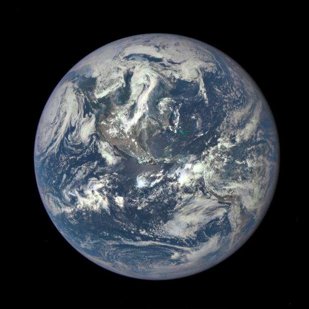
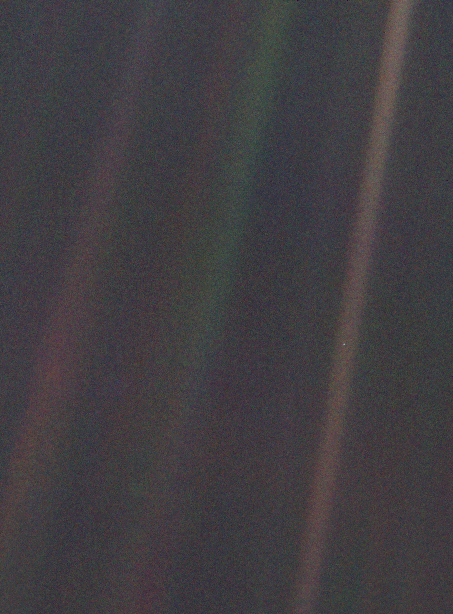

30. The Cosmic Mirror Test 🔗
March 7, 2019
In which I propose the "cosmic mirror test" — do you feel lonely when you look up at the stars? — as a marker for what I call the Gaia instinct, and argue that what climate change truly threatens is not life itself but the soul-sustaining capacity to identify with all of it.
🔗
I’m in the non-apocalyptic camp of climate change believers. I don’t believe even the worst case will make the world uninhabitable. Let’s say that’s a 5% likelihood scenario of maybe 90% species loss and even 90% human population decline. But what do those numbers mean?
🔗
It means: between that extreme and say a middling collapse scenario, a range covering ~50% of outcomes, though the living Earth doesn’t end, the “world” as a shared human sense of place does. This would be a psyche trauma we may have in our future. One you could call soul-death.
🔗
Humans are the only species that seems to operate by an incoherent but poetic sense of inclusive fitness that includes all life. Call it the Gaia instinct. It is a weird instinct that makes us identify with all life, and extend our identity onto it via anthropomorphic projection.
🔗
When we look up at the stars a key thing we see reflected back is our sense of being part of the only known example of “life”. This is why we obsess over aliens and the Fermi paradox. Even false alarms of bacteria-level life get us excited. Oumuamua got us properly worked up.
🔗
That’s the Gaia instinct. The capacity to feel lonely when looking up at the stars. It’s a fairly new feeling. It requires a mix of: big telescopes, globalization, discovery of DNA as shared, non-divine basis for life, and a pale-blue-dot/one-earth outside-in view of ourselves.


🔗
I bet if we could know for certain there was no life out there, and no hope of interstellar travel, we’d lose 90% of our interest in space/astronomy. I’d still be personally interested, because I like stars, black holes and the idea of empty planets. But most would stop caring.
🔗
The cosmos is something like a figurative mirror in a cosmic mirror test. You pass the regular mirror test if you can recognize yourself in a mirror (as other apes, and even crows do). You pass the cosmic mirror test if you feel lonely/yearning when you look up at the sky.
🔗
Not all humans pass the cosmic mirror test or possess the Gaia instinct. Hardcore libertarians certainly don’t. Many traditionally religious types don’t. I suspect many “rationalists” who fetishize “optimization” don’t. That’s okay. You’re all just a bit less evolved than me 😇
🔗
I think the common factor there is that because they believe in some non-corporeal god (efficient markets, traditional gods, post-singularity-AI and/or simulators) the spiritual valence of the material cosmos is... attenuated shall we say? Head-in-some-noosphere syndrome.
🔗
Passing the cosmic mirror test means at some level, you’re a sort of hyper-atheist. What we see is all there is. Everything else is comforting fiction. You must find both material sustenance and spiritual succor in these living/non-living atoms around us. There’s nothing else.
🔗
Ironically, we hyper-atheists are most vulnerable to soul death because we keep our souls in atoms around us. Those who believe in any religion keep souls in eternalist, aionic, safe spaces. There’s a nice Dr. House rant about why atheism makes you value life more, not less.
🔗
The universe is not exactly a mirror-of-living-earth, and potential alien life wouldn’t be a “reflection” but there would be sense of mutual recognition if we did find any life. Even if it was alien/predator/andromeda-strain style life that “recognizes” us by trying to kill us.
🔗
Back on earth, we’re not the only creatures with a sense of outer space (turtles and spiders orient towards the moon/stars for example) but we’re the only ones who experience the Gaia instinct and pass the cosmic mirror test. It’s not just a firmament with twinkling lights to us.
🔗
The earthbound side of the Gaia instinct is caring about an idea like “90% species extinction”. No other species is capable of caring about anything more than its immediate kin, predators, and prey. Local eco-web consciousness only. The Gaia instinct is for tech-modern humans.
🔗
As individuals we can feel an individual version of mutual recognition with almost any creature that we can respond to and that responds to us. Cats and dogs of course, but even trees and slugs. Even if that sense of mutuality is an “eww” or pang at cutting down an ancient tree.
🔗
THIS is what at risk. Life may go on even in the worse 50% of climate change outcomes, but the Gaia instinct might die. The world will end in the sense of an idea of ourselves reflected back when we look up. Even if we retain a gritty, anthropcene kind of cyber-paleo modernity.
🔗
What might end is the capacity to feel the kind of incredibly poignant loneliness that took Hubble, Pioneer 11, shipping containers, and a double helix to deliver to us. It might be the most precious emotion we’ve constructed for our minds to experience. Better than religion.
🔗
Our ability to feel this feeling might be perhaps the peak experience of being human if the worse climate futures play out. We might live on, but on a dispiriting subhuman journey. Or we beat the crisis and go on to experience way more on our many frontiers of the spirit.
🔗
You may not share this sensibility. But ask yourself: do you possibly not feel this because you’ve short-circuited your capacity to feel it by putting your “soul”, for lack of a better word, in an illusory place where it cannot die, but doesn’t truly live either?
🔗
This is ultimately what many of us are thinking/feeling when we talk about climate. We’re not secretly trying to shove Big Government down the world’s throat. We’re trying to prevent the soul-death of the world as we know it. Harsh as 90% collapse might be, soul death is worse.